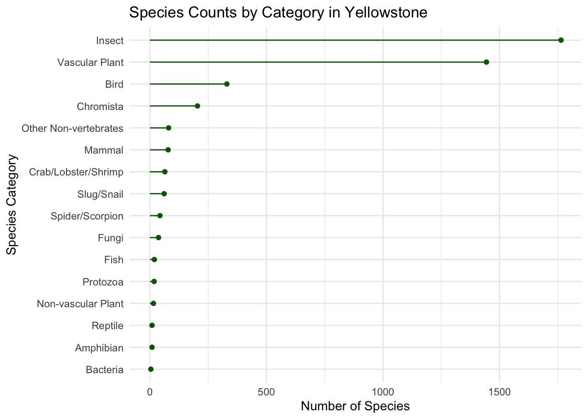
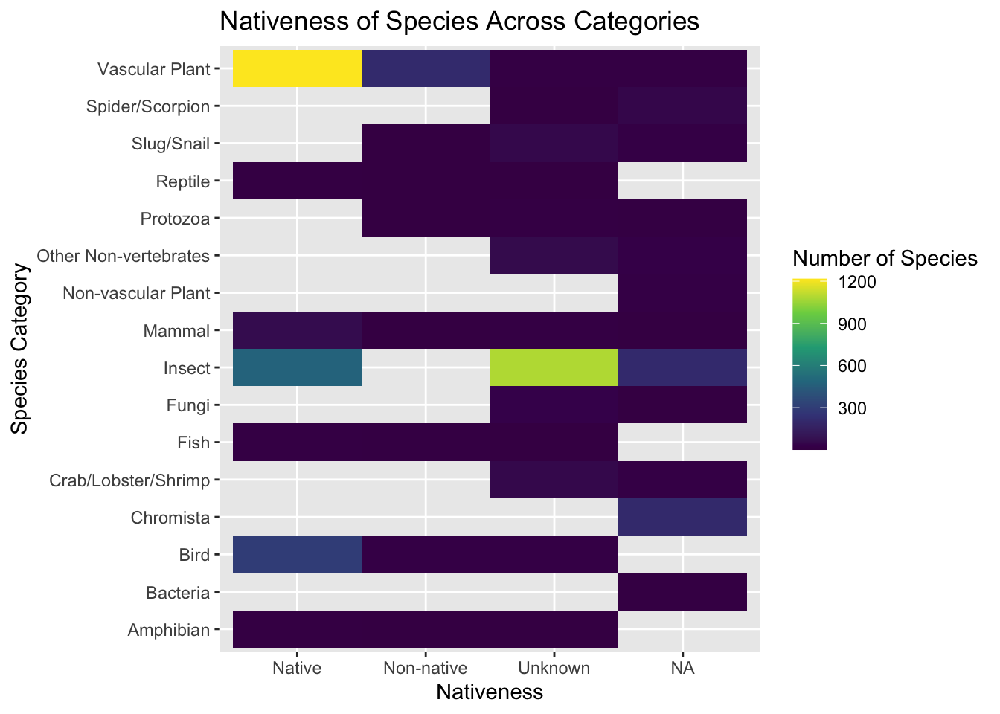
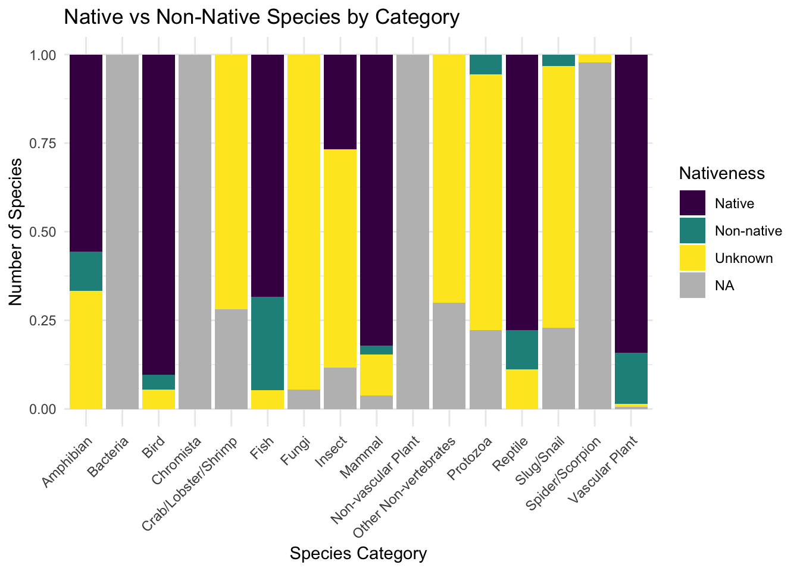

Primary Visualizations
Setting up the Data
library(tidyverse)most_visited_nps_species_data <- readr::read_csv('https://raw.githubusercontent.com/rfordatascience/tidytuesday/main/data/2024/2024-10-08/most_visited_nps_species_data.csv')# Data Prep
yellowstone_species <- most_visited_nps_species_data |>
filter(ParkCode == "YELL")|>
select(ParkName, CategoryName, Order, Family, TaxonRecordStatus, CommonNames, ParkAccepted, Sensitive, RecordStatus, Occurrence, Nativeness, Abundance, NPSTags, References, Observations, Vouchers, GRank, SRank)Plot 1: Species Counts by Category in Yellowstone
category_counts <- yellowstone_species |> count(CategoryName) |>
mutate(CategoryName = fct_reorder(CategoryName, n))
ggplot(data = category_counts, aes(x = CategoryName, y = n)) +
geom_segment(aes(x = CategoryName, xend = CategoryName, y = 0, yend = n),
color = "darkgreen") +
geom_point(color = "darkgreen") +
coord_flip() +
labs(title = "Species Counts by Category in Yellowstone",
x = "Species Category",
y = "Number of Species") +
theme_minimal()
From the lollipop plot we can see that the majority of species recorded in Yellowstone fall within the insect and vascular plant categories. This makes sense because plants and insects tend to have far more species than larger animals in most ecosystems. The next largest category is birds, while physically larger groups such as mammals, fish, reptiles, and amphibians contain far fewer species.
These patterns reflect how biodiversity is typically structured in nature. Smaller organisms with many ecological niches, like insects and plants, dominate species counts, while larger organisms make up a smaller portion of total biodiversity. Overall, the plot shows that Yellowstone’s biodiversity is largely driven by plant and insect species.
Plot 2: Nativeness of Species Across Categories
heatmap_data <- yellowstone_species |> count(CategoryName, Nativeness)
ggplot(data = heatmap_data, aes(x = Nativeness, y = CategoryName, fill = n)) +
geom_tile() +
scale_fill_viridis_c() +
labs(title = "Nativeness of Species Across Categories",
y = "Species Category",
fill = "Number of Species")
The heatmap shows how the nativeness of species varies across different categories. The largest combination is native vascular plants, with roughly 1,200 species. Insects also have a large number of species, although many are classified as unknown, likely because determining the origin of many insect species can be difficult.
Across most categories, the majority of species appear to be native rather than non-native, suggesting that Yellowstone has maintained much of its natural ecological structure. Some categories contain unknown or NA values, which likely indicates that the nativeness of those species has not yet been classified, this is likely the case for Chromista as they are small aquatic organisms.
Overall, the heatmap suggests that most biodiversity within Yellowstone is composed of native species.
Plot 3: Native vs Non-Native Species by Category
ggplot(data = yellowstone_species, aes(x = CategoryName, fill = Nativeness)) +
geom_bar(position = "fill") +
labs(title = "Native vs Non-Native Species by Category",
x = "Species Category",
y = "Number of Species",
fill = "Nativeness") +
scale_fill_viridis_d() +
theme_minimal(base_size = 14) +
theme(axis.text.x = element_text(angle = 45, hjust = 1))
The stacked bar plot provides a clearer view of the proportion of native versus non-native species within each category. Most categories are dominated by native species, with smaller proportions of non-native or unknown classifications.
One category that stands out is fish, which appears to have a relatively larger proportion of non-native species. This may be due to the fact in Yellowstone a large number of trout were introduced to support recreational fishing.
Overall, Yellowstone appears to maintain a strong majority of native species across most organism categories, which is important for preserving the natural balance of the park’s ecosystem.